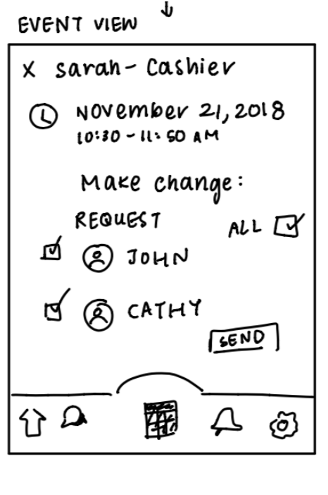
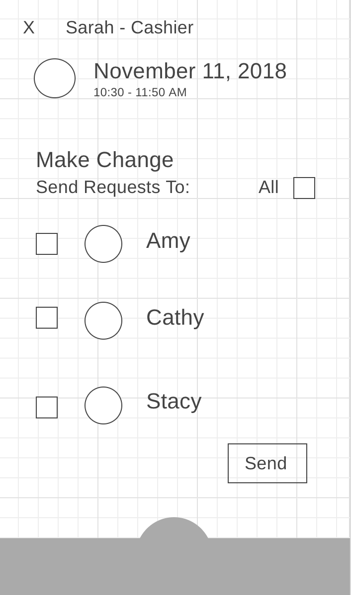
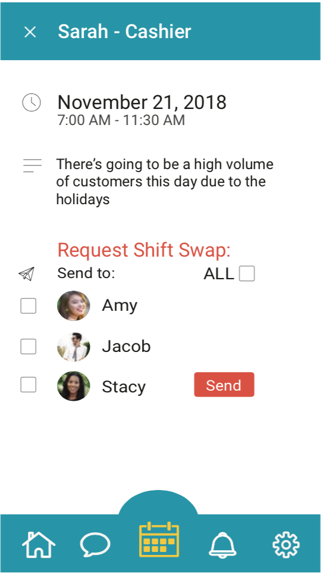

swApp
A native mobile app created to help managers of small businesses facilitate shift-swapping within their employees. Created as a group project for an interaction design class, my roles included User Research (Persona Creation, User Interviews, and Journey Map creation) as well as Design (Wireframing, Prototyping).
Roles
Research
Customer Journey Map
Persona Creation
User Interviews
Design
Mood Board
Style Guide
Prototype
Lo-fi Prototype
Invision Prototype
Research
Wireframe
Testing
Research
The objective of our initial research was to gain a better understanding of the domain of shift-swapping. We conducted User Interviews, online research, and Competitive Analyses to better understand specific pain points within the shift swapping process.
"shift swapping can be inefficient and cumbersome."
-barista working at a coffee shop
1.
Many of the people we interviewed said that they swapped shifts by texting coworkers. Most found this process too informal, disorganized, and inefficient.
2.
From online research, we found that shift-swapping can be an issue when different jobs require specialized skills.
3.
Through our competitive analysis, we found that calendars did not show all employee shifts, making shift swapping more difficult to coordinate.
Wireframe & Design
Next, we analyzed the actual app design. We created a mood board and style guide to make sure we had a cohesive design that evokes a simple yet professional look. We conducted a design sudit, created application flow charts, and developed wireframes to map out how the user would interact with the app.
Sketches

Wireframes

Prototypes


User Testing
The last stage of this project involved digitizing wireframes and conducting user-testing on prototypes. We integrated our digitized screen designs into invision and asked users to complete simple tasks.
Likes
Seeing all notifications for each day
Easy to quickly reply to people
Straight forward
Dislikes
Spacing between notifications
Needs settings page
Less harsh language